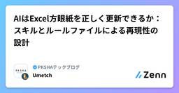

PKSHAテックブログ のフィード
https://zenn.dev/p/pksha
株式会社 PKSHA Technologyおよびグループ会社のエンジニアが実務から得た学びを発信します。 チームやプロダクトの紹介はぜひnoteもご覧ください。
フィード

DynamoDBを諦めないためのZero-ETL
PKSHAテックブログ のフィード
TL;DRDynamoDB が苦手な集計・分析は、AWS Glue の Zero-ETL 統合で S3 Tables へ分析用コピーを作ることで補える。アプリケーション側のテーブル設計は変えなくてよい同期は初回のみ全量、以降は変更データキャプチャによる差分。更新間隔は最短15分で、リアルタイム反映ではないコストは変更のある取り込みが何回走るかでほぼ決まる。鮮度要件から更新間隔を逆算するのが費用最適化の鍵 1. はじめにPKSHA Technology でソフトウェアエンジニアをしている増田です。DynamoDB は、スケーラビリティ、運用負荷の低さ、キーアクセスにお...
3日前

AIはExcel方眼紙を正しく更新できるか：スキルとルールファイルによる再現性の設計
PKSHAテックブログ のフィード
こんにちは。PKSHA Technology でソフトウェアエンジニアをしている梅津です。クライアントワークでは、要件定義書や課題管理表などを Excel で作成し、打ち合わせのたびに更新する場面がよくあります。「変更箇所は赤字にする」「削除した行は消さずにグレーで残す」「更新のたびに履歴を1行追加する」など、ドキュメントごとに細かな更新ルールが決められていることも少なくありません。そのため、内容を更新する作業はもちろん、ルールに沿って体裁を整える作業にも時間がかかります。こうした更新作業では、担当者が既存ファイルの見た目からルールを読み取り、反映しているケースも多いでしょう。そこ...
5日前

LLM モデルの差し替えを自動化する llm-replacer の紹介
PKSHAテックブログ のフィード
はじめにこんにちは、PKSHA Technology の深堀です。LLM を組み込んだサービスでは、モデルが EOL（End of Life）を迎えた際にモデル更新が必要です。ただ、実際に運用中サービスのモデルを差し替えようとすると、単に model_id を 1 行変えれば終わり、とはなかなかなりません。運用中サービスのどこでモデル ID が指定されているかを特定する（コードへの直書き・.env・SSM Parameter・Secrets Manager など）検証用環境を用意し、新モデルの精度評価をするソースコード・設定ファイルを修正し、プルリクエストを作成するプ...
10日前
「Simple Made Easy」の観点から、UI/UXはどうあるべきか
PKSHAテックブログ のフィード
要約Rich Hickey の講演「Simple Made Easy」の考え方を、UI/UX に当てはめて整理した記事です。「シンプル(Simple)」と「簡単(Easy)」は別物で、Simple は「モノの構造」の話、Easy は「人との親近性」の話です。Easy を優先した UI は「Easy but Complex」の罠に陥りがちです。最初こそ快適でも、育つほど絡み合いが効いてきて Hard(変更が怖い・誰も読めない)になります。典型例が Excel です。本文では、UI で起きる絡み合い(complect)の定番パターンを「表示と操作」など5つに整理します。そこから Si...
12日前
メモリリークの正体は glibc malloc だった ── Python 以外でも効く LD_PRELOAD 1 行のアロケータ差し替え
PKSHAテックブログ のフィード
要約FastAPI サーバで、メモリ使用率が単調増加し、OOM が発生する現象に遭遇した。同じアプリケーションコードと負荷試験内容のまま jemalloc に差し替えると OOM が発生しなくなったため、主要因は glibc malloc（ptmalloc2 由来）側のメモリ管理だと判断した導入は jemalloc の共有ライブラリを追加し、環境変数 LD_PRELOAD を 1 行設定するだけ本対策は Python 以外でも使える。 Linux 上の Ruby on Rails や Node.js のアプリケーションでも、メモリ増加が glibc malloc に起因する...
22日前
Devinを使ってデザイナーがSlackだけでデザインリファクタリングした話
PKSHAテックブログ のフィード
初めまして！PKSHA Technology デザイナーの清水と申します。普段はデザイナーとしてXで発信しています。今日は、Devin を使って Slack だけでデザインリファクタリングを行った事例をご紹介します。（この記事は、デザイナーやデザインシステムに関わるエンジニアを主な対象にしていますが、Devin や AI を使ったリファクタリングに興味がある方にも読んでいただけるよう、専門用語には適宜補足を入れています。）Devin とは、Cognition AI が開発した AI ソフトウェアエンジニアです。コードの読み書き・テストの実行・プルリク（以降 PR）の作成まで自律的に行...
1ヶ月前
イベント駆動で起きる Race Condition に MassTransit Saga でどう向き合うか
PKSHAテックブログ のフィード
はじめにPKSHA Technology のソフトウェアエンジニアの大柳です。私が担当する PKSHA AI ヘルプデスクでは、SharePoint Online や Box のドキュメントを自社の RAG サービスへ同期する機能を、MassTransit を使った非同期イベント駆動で実装しています。前回、同じチームの小松原が MassTransit で実現するイベント駆動アーキテクチャ で、メッセージの発行・Consumer・Saga ステートマシンといった基礎を紹介しました。記事末尾には次の注記があります。本記事のサンプルコードでは、説明をシンプルにするため失敗時の St...
1ヶ月前
「AIにユーザビリティ評価させる」Skillを作って詰まった場所と、その解決策8つ
PKSHAテックブログ のフィード
初めまして！PKSHA Technology デザイナーの清水と申します。普段はデザイナーとしてXで発信しています。今日は、ユーザビリティ評価（今回行ったのはヒューリスティック評価）を skill 化したいと考えている方に向けて、テストデータを元にアウトプットが改善した例や人間が使いやすくなった例を8つ紹介します。（この記事は、skill化に取り組んでいるデザイナー・エンジニアを主な対象にしていますが、ヒューリスティック評価に馴染みのない方にも読んでいただけるよう、専門用語には適宜補足を入れています。）用語の補足ヒューリスティック評価とは、ニールセンの10原則などの専門的なガイドラ...
2ヶ月前
デザインシステムのskillの精度が上がった8つの方法
PKSHAテックブログ のフィード
初めまして！PKSHA Technology デザイナーの清水と申します。普段はデザイナーとしてXで発信しているのですが、今日は人生で初めてテックブログを書いてみたので、よければご覧ください。（この記事は、デザイントークンを扱うデザイナー・エンジニアを主な対象にしていますが、AI にデザイン実装を任せてみたいという方にも読んでいただけるよう、専門用語には適宜補足を入れています。）テックブログの内容としては、同じファイルを色んなデザイントークンの skill を使ってひたすら改善し、その中で良かった方法を8つご紹介します。サンプル数はまだ少なく精緻な情報ではないので、そこだけご容赦くださ...
2ヶ月前
自動システムテストのためのテスト再設計と人材育成 (前編)
PKSHAテックブログ のフィード
はじめにPKSHA Technology で品質保証を担当している金子です。この記事では、ソフトウェアテスト自動化カンファレンス2025での発表をもとに、私が入社して3年続けてきた自動システムテストの取り組みを紹介します。3年前、手動のシステムテストをそのまま自動化するのでは効果が見込めず、テストを再設計することが必要と判断しました。その結果、テストケースあたりバグ発見率は手動時の3倍になりました。手動テストケース数は1700件から970件に減り、手動時より3営業日早くテストが完了するようになりました。この記事を通して、自動テストを成功させるためには単に自動化するだけでなく、...
2ヶ月前
Bedrock AgentCore + Strands Agents SDK で作る、使うほど賢くなる社内RAGボット
PKSHAテックブログ のフィード
1. はじめにPKSHA Technology でソフトウェアエンジニアをしている成川（@eve_n）です。私のチームでは、社内ヘルプデスク向けの Slack RAG ボットを運用しています。社員から日々寄せられる問い合わせ（社内手続きや各種 SaaS の使い方、備品・申請まわりなど）に、Slack 上で自動応答するボットです。ヘルプデスク担当者の負荷を下げ、社員が自己解決できる割合を増やすことを目的に、自分たちで開発した社内専用ツールです。先日これを Bedrock AgentCore + Strands Agents SDK をベースに作り直しました。!本記事で扱うのは...
2ヶ月前
AI-DLCで「ベテランしか分からない」を減らす ─ モブ開発で暗黙知を共有した話
PKSHAテックブログ のフィード
はじめにPKSHA Technology のソフトウェアエンジニアの小松原です。私が担当する PKSHA AI ヘルプデスクでは、自社の RAG サービスに Box 連携機能を追加する開発で AI-DLC（AI-Driven Development Life Cycle）を取り入れました。AI-DLC は、AI を活用して開発速度を上げる文脈で語られることが多い手法です。ただし今回の導入で重視したのは速度ではありません。主目的は、特定メンバーに偏っていたドメイン知識や設計意図を、チームの共有資産として残すこと でした。本記事では、AI-DLC を属人化解消のための開発プロセ...
2ヶ月前
今さら聞けないCloudWatch Logsへのログ出力
PKSHAテックブログ のフィード
PKSHA Technology ソフトウェアエンジニアの矢嶋です。AWS でアプリケーションを動かすときは一般的なログ出力先として CloudWatch Logs を使いますが、その際にプレーンテキストで出すか JSON に構造化して出すかで、後からログを分析するときの使い勝手が大きく変わります。基礎的な話ですが、自分のふりかえりも兼ねて改めて整理してみたいと思います。この記事では、Python で作ったアプリを ECS と Lambda で動かし、ログの出し方と見え方を整理します。 ログの出し方 ECSECS で最も一般的なログドライバーである awslogs ドライ...
3ヶ月前
Terraformの複数人開発でdev環境を安全に回す方法
PKSHAテックブログ のフィード
はじめにこんにちは、PKSHA Technology で SRE をしている柴田です。Terraform を複数人で運用しているチームで、こんな悩みはありませんか？自分の apply した変更が、別メンバーの apply で消えてしまう-target で影響範囲を絞っても、他のメンバーの変更が差分として出てしまうTerraform の複数人運用について検索すると、state ファイルの共有や lock の話はたくさん出てきます。一方で、shared な dev 環境で複数人が同時に検証するとき、ブランチごとに異なる変更をどう扱うかという観点の記事は、あまり見かけません...
3ヶ月前
AWS FISによる単一AZ障害テストの実施
PKSHAテックブログ のフィード
はじめにこんにちは。PKSHA Technology で SWE をしている福田です。マルチ AZ 構成のシステムにおいて「本当に単一 AZ 障害時にサービスが継続できるのか？」を検証したいケースには皆様どのように対応されているでしょうか？私も実際のプロジェクトで検証する機会があり、AWS Fault Injection Service（AWS FIS）を利用しました。FIS には AZ 障害のシナリオライブラリが用意されており、一見するとこれを使えば簡単にテストできそうですが、実際にやってみると想定通りにいかないポイントや FIS 特有の動作について理解を要するポイントがいく...
3ヶ月前
KMSでInvalidCiphertextExceptionが出た時に、素因数（p, q）までチェックした話
PKSHAテックブログ のフィード
本記事に掲載するRSA鍵・素因数は、本記事の検証のためだけに生成した一時的なものです。本検証フローでは、検証完了後に対応するKMSキーを無効化したうえで削除スケジュールを設定しました。実サービスの暗号化には一切使用していません。 はじめにPKSHA Technology でソフトウェアエンジニアをしている田島です。普段は PKSHA VoiceAgent の開発に携わっています。AWS KMS の外部キーインポートでInvalidCiphertextExceptionというエラーが返ってくるという経験をした方はいらっしゃいますでしょうか？ 外部キーインポートをする機会自体はあ...
4ヶ月前
脆弱性対応と minimumReleaseAge を両立しながら依存管理をクリーンに保つ
PKSHAテックブログ のフィード
はじめにこんにちは。PKSHA Technology で SWE をしている須藤です。npm エコシステムを標的としたサプライチェーン攻撃はすでに現実のリスクです。2026 年 3 月には、週間 8,000 万ダウンロードを超える axios のメンテナーアカウントが乗っ取られ、悪意ある依存パッケージを通じてクロスプラットフォーム対応の RAT（遠隔操作ツール）を配布される事件も起きています。こうした攻撃への対策として、リリース直後のパッケージのインストールを遅延させる仕組み（pnpm の minimumReleaseAge など）が主要パッケージマネージャへ広がっています。し...
4ヶ月前
クラウド上の機密PDFを、URLを漏らさずブラウザで安全に見せる方法
PKSHAテックブログ のフィード
はじめにPKSHA Technology のソフトウェアエンジニアの許です。私が担当する PKSHA AI ヘルプデスクでは、社内ドキュメントをもとに AI が回答を生成する RAG（Retrieval-Augmented Generation）ベースのチャットエージェント機能を提供しています。ユーザーが質問を投げると、AI がクラウドストレージ上のドキュメントを検索し、根拠を示しながら回答を返します。こうしたプロダクトでは、AI の回答だけでなく「その根拠となった元のドキュメントを確認したい」というニーズが生まれます。とくに PDF ファイルの場合、テキストの抜粋を見せるだけで...
4ヶ月前
Mistral AI Worldwide Hackathon 2026 - Tokyo Edition で優勝した話
PKSHAテックブログ のフィード
はじめにこんにちは、PKSHA Technology ソフトウェアエンジニアの増田遥介です。2026 年 2 月 28 日〜3 月 1 日に開催された Mistral AI Worldwide Hackathon 2026 の東京大会に参加しました。同期で AI Research&Solution カンパニー新卒 SWE の Edward さん・有山さん、ならびに当日会場で声をかけてくださった大学生の山端さんとチームを組み、優勝しました。その後、各都市の優勝チームが集まる Global Finals（世界大会）にも進出しました。引用：Iterate｜Mistral W...
4ヶ月前
OpenCode から学ぶ、エージェントのためのツール実装
PKSHAテックブログ のフィード
はじめにこんにちは、PKSHA Technology アルゴリズムエンジニアの小林です。OpenCode は Claude Code や Codex のような AI コーディングエージェントの OSS 版です。ファイル編集やタスク（サブエージェント）実行といった、コーディングエージェントのための一般的なツール呼び出しがサポートされています。https://github.com/anomalyco/opencodeOpenCode については、弊社の別記事 OpenCodeを読む でも紹介しました。本記事では、特に OpenCode でエージェント向けのツールがどのように実装...
4ヶ月前